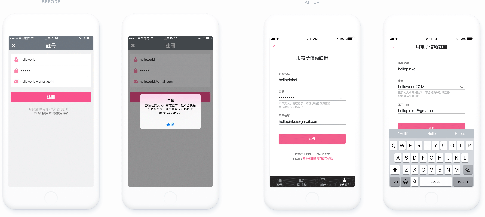
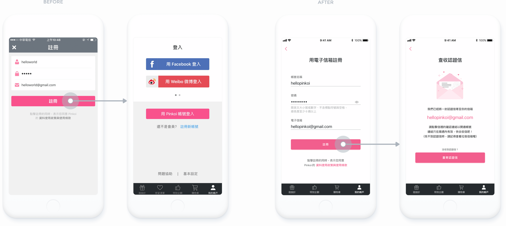

Pinkoi 是我非常喜愛的設計商品購物網站，在使用Pinkoi App 的過程中，注意到註冊登入流程有不少可以處理得更好的環節。若能加以改善，使用體驗將會更加流暢，同時降低潛在會員流失的可能。
針對觀察到的問題發想解決方案、繪製視覺稿，也經由重新設計，對註冊登入頁面的設計細節有更加全面和深入的瞭解，體認到一個好的使用流程不僅要能簡易快速地完成，還要處處體貼使用者。
原先的註冊流程裡，若使用者設定的密碼與條件不符，會跳出警告對話框，向使用者說明密碼的正確格式。但這麼多的設定條件在按下「確定」後就會消失，短期時間內很難記憶所有內容。 另外，警告對話框的文案裡還出現一段錯誤程式碼 (errorCode:400)，多餘的資訊容易造成使用上的困惑和混淆。
重新設計以後把密碼設定條件列在輸入框下方，一目瞭然之下可以更快速地設定正確的密碼，也能在一開始就預防錯誤。 另外增加「顯示/隱藏」功能，讓使用者透過點擊眼睛圖標顯示密碼，確認輸入的資訊是否正確。
原先的註冊流程在填寫完表單、點擊「註冊」按鈕以後會直接跳轉到註冊登入主畫面，使用者無從得知還有「查收認證信」這個步驟需要完成。重新設計以後，新增明確的確認頁面，幫助使用者瞭解目前狀態，作為判斷下一個執行動作的根據。
註：此為自行練習設計項目，非官方設計。首圖最左側螢幕「Pinkoi LOGO」及「小女孩開箱」圖片版權為 Pinkoi 所有，其餘圖標和插圖皆為自行繪製。
See the prototype Previous: Worry-Free Next: BotBonnie Landing Page